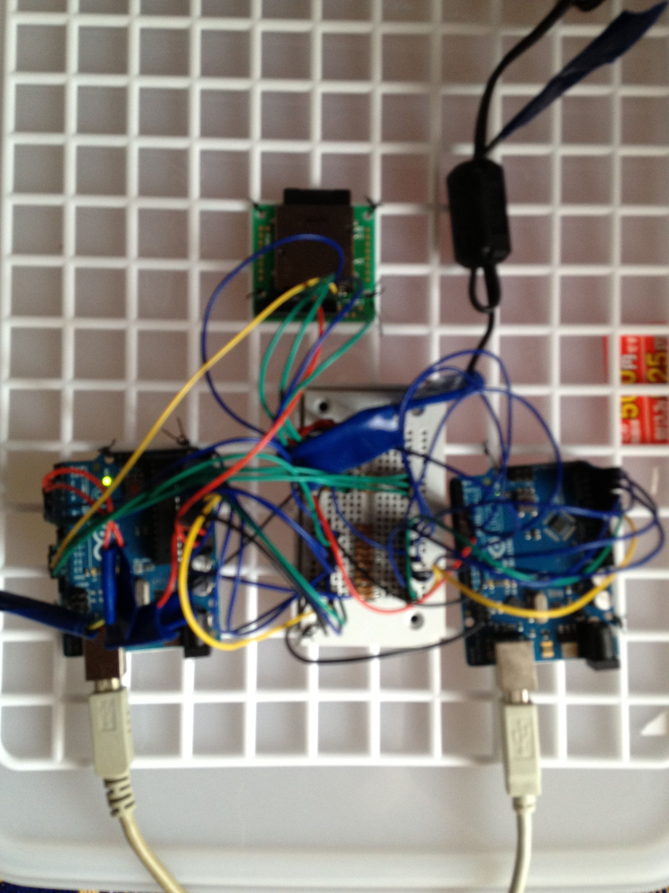
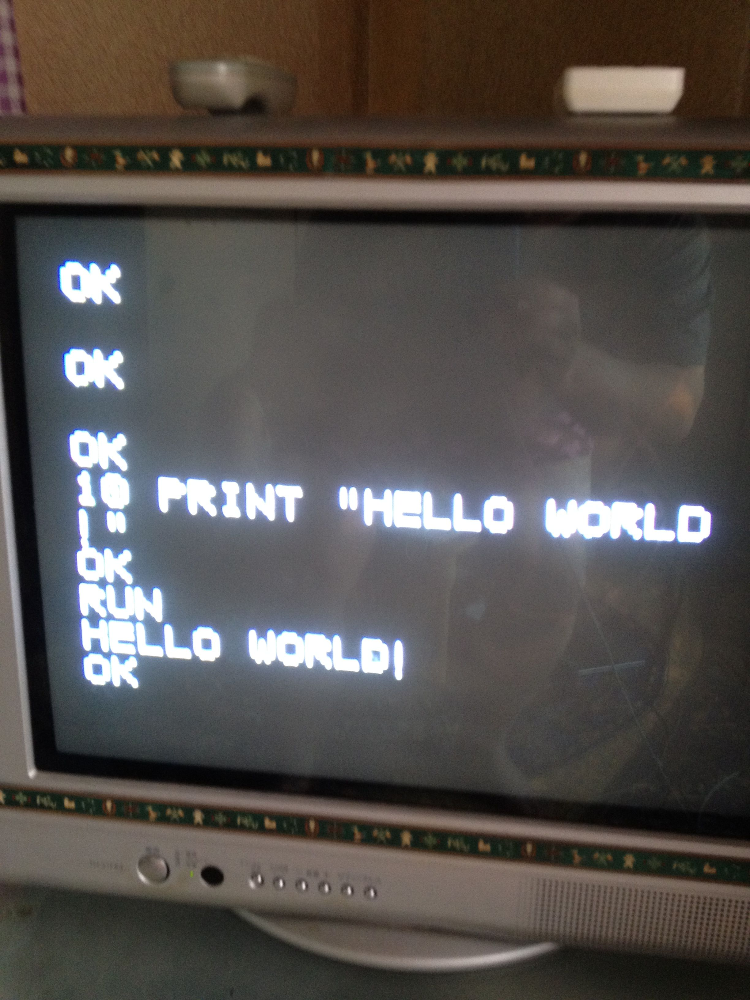
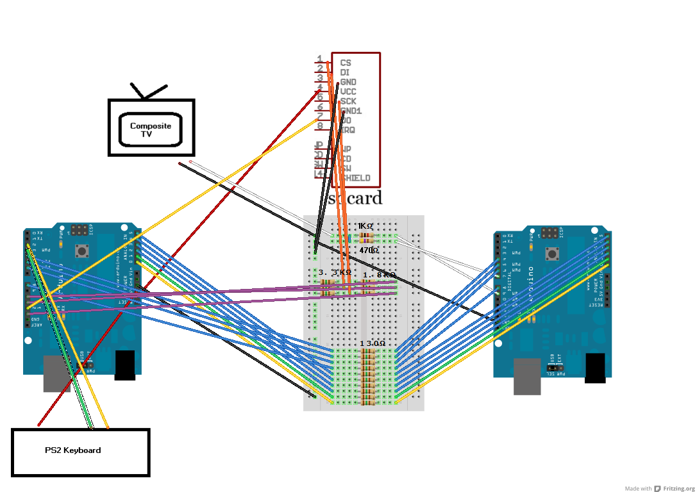
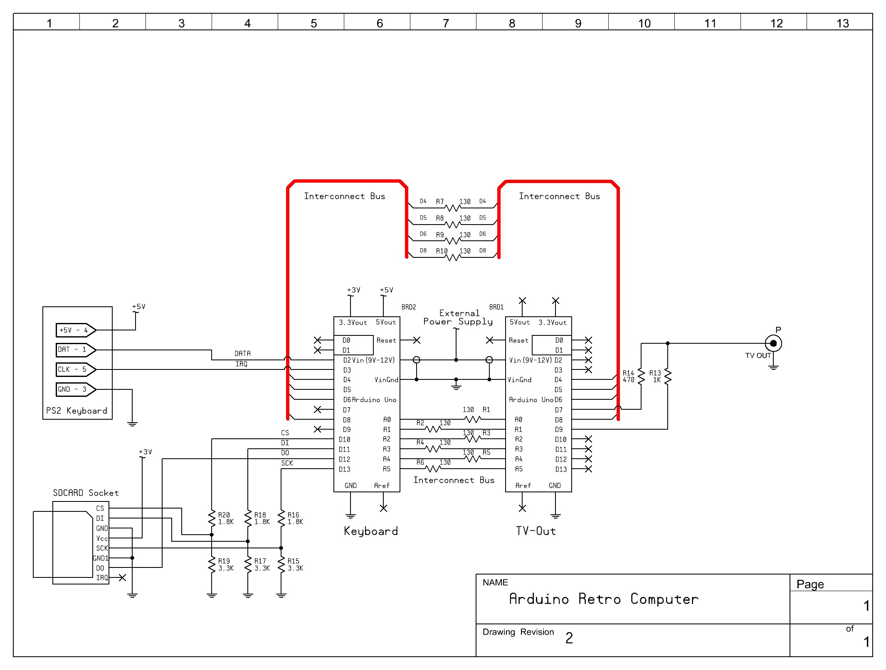

Arduino Retro Computer with oard and SD card and BASIC interpreter for TV
Copyright 2012 Usmar A Padow usmpadow@gmail.com (also known as amigojapan on freenode IRC and on youtube)
This is a stand-alone computer that you can build easily
May 13 2012: Finally released the TV version of the computer!
May 7 2012: Added a BASIC preprocessor made in python that allows you to write code withought line numbers and to use labels. the preprocessor adds the lines and changes the labels to line numbers. Also made an AmericanFootball BASIC game, as an example of how to use the preprocessor. Also made some small changes to the firmware, so make sure to update that too.
May 10 2012: Fixed a bug that allowed only 127 lines of BASIC in one program, now allows 255 lines, I will increase this number when I get a chance. AmericanFootball.BAS now works, I have finally tested it. Update all your files!


Arduino Retro Computer TV intro
Arduino Retro Computer American Football Game

WARNING, after I drew the diagram, I realized that I missed saying that another wire from the PS2keyboard goes to ground. Also I did not mention that I cut the cable of the PS2Keyboard and connected the wires directly to the arudino I soldered some hard wire to each one first.
PWillard kindly drew this digram of the Arduino Retro Computer TV

I did not use this, but you may consider using this hack to connect an SD card using a 5.25 inch floppy disk connector:http://hackaday.com/2006/09/12/floppy-connector-mmc-card-slot/
WARNING, the SDcard library does not use a FAT file system. so any data you may have on the SD card will be lost. you will need to reformat the SD card to use it again on a PC.
The keyboard you use MUST be a PS2 keyboard(PS2 as in the old IBMs, not PlayStation2)
for information on how to connect the keyboard to the arudino go here:http://www.arduino.cc/playground/Main/PS2Keyboard
Download the software from https://github.com/amigojapan/Arduino-Retro-Computer-TV
Unpack the 2 zip files into the libraries directory of your arduino software, restart the IDE
Parts List
Amount Part Type
1 TV with composite video input
2 Arduino processor ATmega; variant Arduino (I used Arduino UNOs)
1 PS2 Keyboard
1 SDCard Slot (you can use the hack recommended above)
1 Breadboard
3 1.8K . Resistor
3 3.3K . Resistor
10 130 . Resistor
1 1K . Resistor
1 470 . Resistor
The default is NTSC, for PAL systems change line 87 of TVout_Arduino.ino from TV.begin(_NTSC); to TV.begin(_PAL);
Usmar Padow's BASIC commands:(COMMANDS MUST BE IN UPPER CASE, YOU MUST MAKE A PROGRAM, DIRECT INTERPRETATION IS NOT IMPLEMENTED)
LIST --- Displays each line of the current program line by line.
RUN --- Runs the current program
OPEN # --- Opens or creates a new program. the # parameter can be from 0 to 9. on bootup program 0 is loaded
L# PRINT "TEXT" --- prints a line of text (L# means Line Number)
L# PRINT variable_name --- prints the contents of a variable
L# REM comment -- creates a comment in the program
L# INPUT variable_name --- prompts the user to input a number, and stores it in a variable
L# variable_name=expression --- evaluates the expression and stores it in a variable. e.g. X=5+3
L# IF expression THEN L# --- evaluates expression and goes to the line specified after THEN if the expression is true. e.g. IF X>3 THEN 10
L# FOR variable_name=# to # --- makes a FOR NEXT loop BUG FIXED! e.g FOR X=10 TO 20
L# NEXT variable_name --- ends a FOR loop e.g. NEXT X
L# GOTO L# --- goes to the line number specified
L# GOSUB L# --- goes to the line number specified and will return to the next line when a RETURN is encountered (it seems this might be buggy too. I will try to fix it)
L# RETURN --- return to the next line after the last GOSUB
L# END --- ends the current execution of the program at current line
to create a random number, you must set X to the minimum number then set Y to the macimum number, then call variable_name=RND, e.g.:
10 X=10
20 Y=20
30 N=RND
40 PRINT N
this program will assign a random number between 10 and 20 to N and print it
Variables names must be a single letter of the alphabet
Preprocessor:
the preprocessor adds the lines and changes the labels to line numbers
quckbasicpreprocessor.py converts labels to line numbers
example usage:
python quckbasicpreprocessor.py AmericanFootball.qb
the new program will be stored in PROGRAM.BAS
How to upload BASIC programs to the SD card withought having to type them out:
Upload the SDmemBASIC.ino sketch to the arudino.https://github.com/amigojapan/BASIC-interpreter-for-arduino-that-uses-SD-memory-instead-or-RAM-and-ArduinoSimulator
Use a terminal program like Tera Term, connect to your arduino(if it is terraterm, set the wait to 20ms for each char and 200ms for each line in setup=>Serial Port)
if in windows use a text editor that supports unix new lines like geany
Open the .BAS file in the text editor
do Edit->Copy
Open the terminal program and connect to the arudino at 9600bps
do Edit->Paste
(if terra term do Edit->Paste CR)
reupload the LCD sketch to run the programs on LCD
Programs that work on the Arduino Retro Computer are welcome to usmpadow@gmail.com